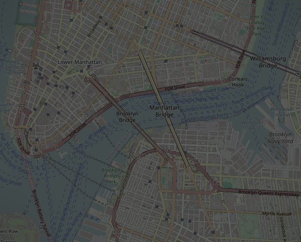

Tìm con đường ngắn nhất
Phương Pháp Tìm Đường
Tự mình suy luận ra cách tìm con đường ngắn nhất từ A đến B, trước khi ai đó gọi tên nó.
Nhóm 2 trình bày
Vấn đề
Google Maps tìm đường
như thế nào?
Bạn cần đi từ A đến B. Giữa hai điểm luôn có rất nhiều tuyến, và mỗi tuyến tốn một mức khác nhau.
- Nhiều tuyến Vô số cách đi từ A sang B
- Chi phí khác nhau Thời gian, khoảng cách, tiền xăng
- Mục tiêu Chọn tuyến có chi phí nhỏ nhất

Tuyến nhanh nhất